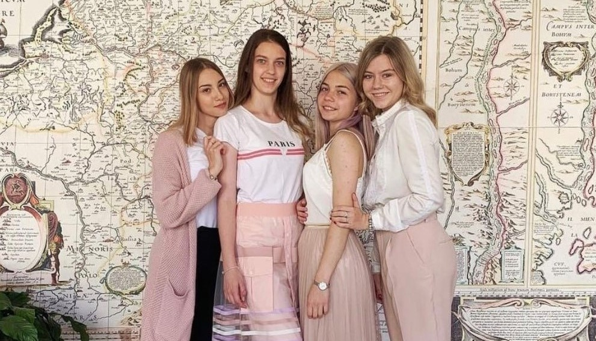
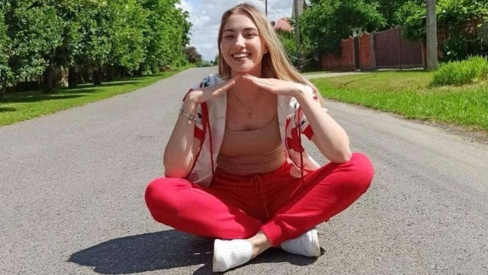

Представляю Вашему вниманию официальную страничку моей хорошей подруги Ангелины Дайнеко!
 Кто же такая Ангелина?
Чем она занимается?
Ангелина очень любит учебу. Мечтает закончить Академию Управления с красным дипломом. Занимается программированием. В настоящее время проходит урсы графического дизайнера. Она очень любит рисовать. Любое дело она выполненяет с огромным желанием и любопытством.
Какая она?
Ангелина-голубоглазая блондинка. Высокая и стройная. Очень любит заниматься спортом. предпочитает баскетбол и футбол. Характер у нее мягкий, спокойный. Она очень целеустремленная, выполняет поставленные задачи в срок.
Чем она увлекается?
Ангелина в детстве очень любила рисовать, поэтому сейчас старается развиваться в этой сфере. Обычный учитель рисования-это е ее. В современном мире важно рабаоть с компьютера, поэтому Ангелина выбрала направление графического дизайна. Это очень востребованное течение в настояшее время.